k-Day 031｜門
出發前需要搞定兩件事。首先是車燈，經過昨天一整天在道路上的試探與跟隨，我認為現有的前後車燈不足以引起此地司機對我的注意，必須把自己搞得跟螢火蟲一樣，讓他們沒有任何撞死我的理由才行。另外，前兩天已經發現這邊的超商沒有蛋白飲，且蛋白粉也不是隨處都可以買到的，基於上述兩個原因，以及我個人的心理依存感，今天第一站就是到我心愛的迪卡儂補貨。
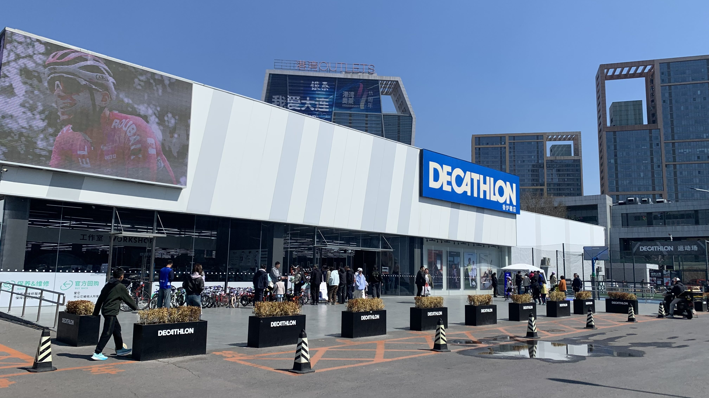
從頭到腳，連包帶燈都是迪卡儂的產品，站在門口廣場，聽到上方電視牆傳來熟悉的法文歌，有回家的感覺。這家分店很大，車子是可以牽進去的，因此直接拉到自行車部門請店員推薦最亮的前後車燈安上。
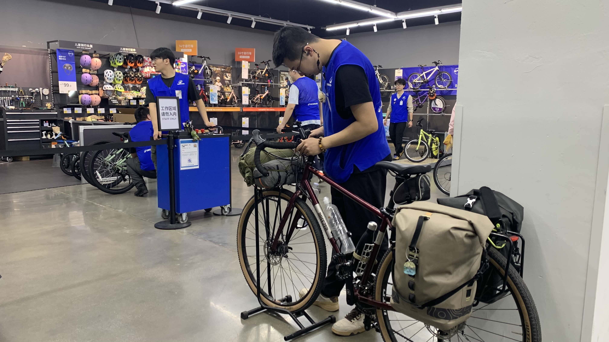
店員立刻幫我裝上新買的車燈。還買了補胎組合、能量膠、蛋白粉包，還有蛋白餅乾。結帳時因為機器不支援國外信用卡，被引導到櫃檯付款。
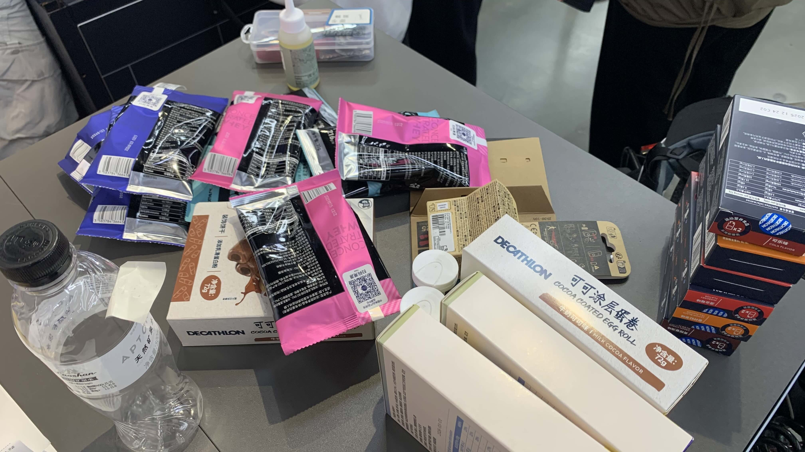
刷卡後店員說總共1553元。看著桌上這些東西，怎麼也不像是需要台幣七千多塊的樣子。拿了發票一件一件核對，跟店員說多了一筆一千塊的產品。鮮少操作信用卡功能的店員們沒有人知道如何刷退，搞了好久，問我可否退1000元現金給我。帶這麼多錢旅行實在很不方便，露出猶豫的表情後，又陸續來了幾位較資深的店員。最後以退貨的方式終於解決問題，時間已過十二點半。
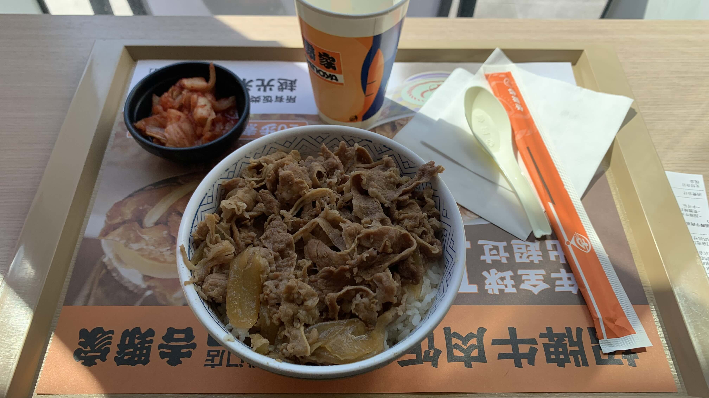
索性在旁邊商場的吉野家吃一份牛丼，之所以選吉野家，主要還是昨天的食物肉太少，身體相當渴望蛋白質的緣故。
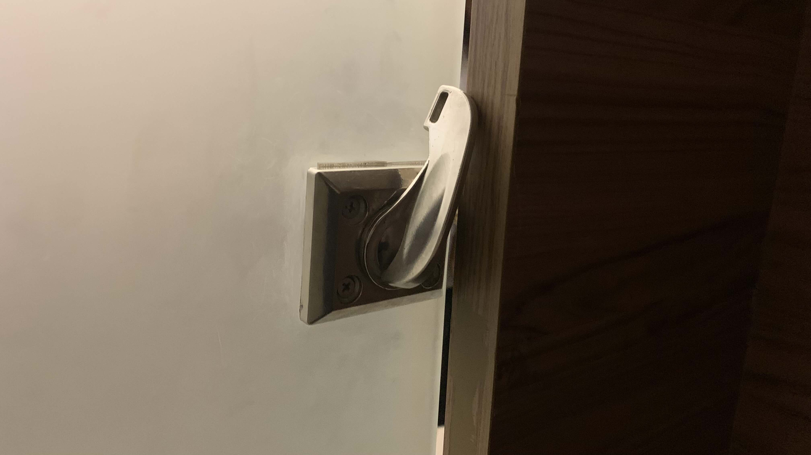
吃飽後上個廁所準備上路，然而廁所的門是關不上的。關於這一點，昨天已經接受過初級教育，有一派的人上廁所是大開著門的。關於這點，目前先視為文化的一部分，有待觀察後再作評論。不過既然都做了門鎖卻鎖不上，這就值得懷疑施工的人究竟存的是什麼樣的心了。
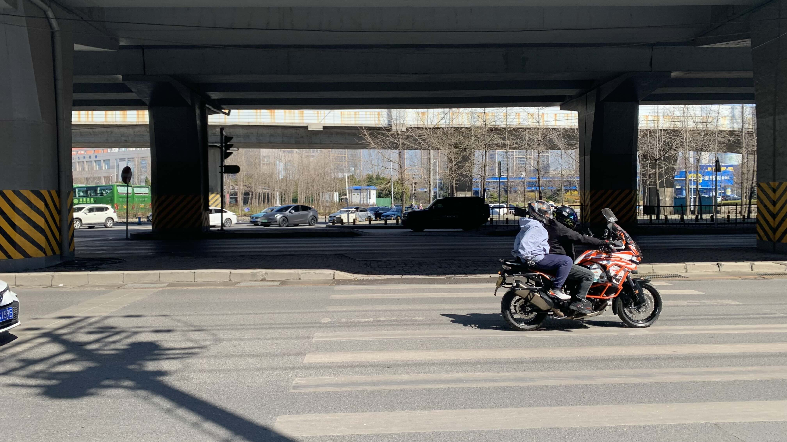
許多路口仍然沒有紅綠燈，一開始還左右張望，看到有人直接逆向闖過去後，也就釋懷的跟著橫越馬路。當然少不了陣陣憤怒的喇叭聲。
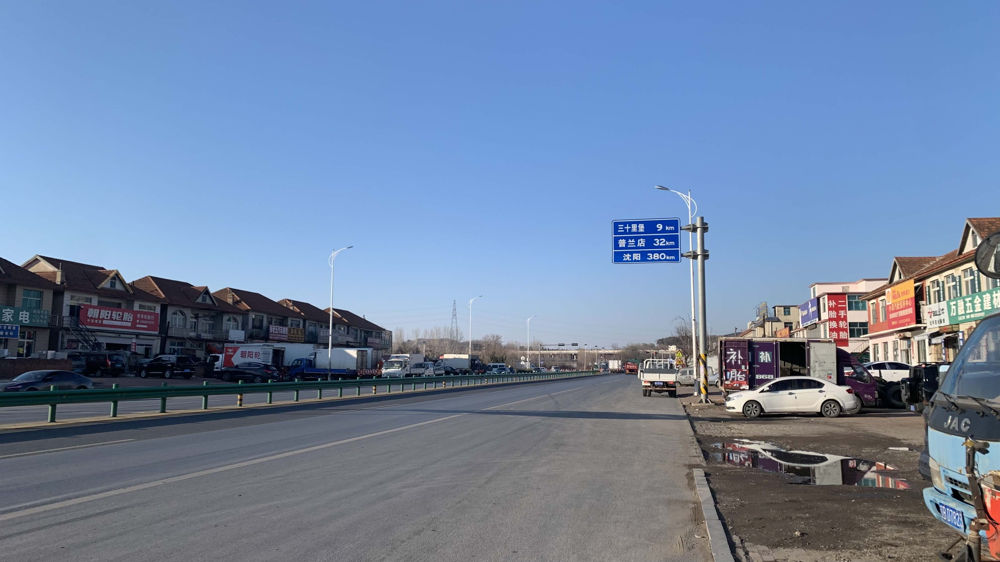
出發不久大樓就消失了，路邊都是低矮的，沿著國道蓋起來的平房。
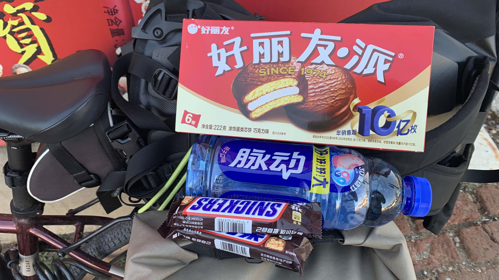
騎到一個像是農村的地方，添購了晚上要吃喝的東西就繼續上路。
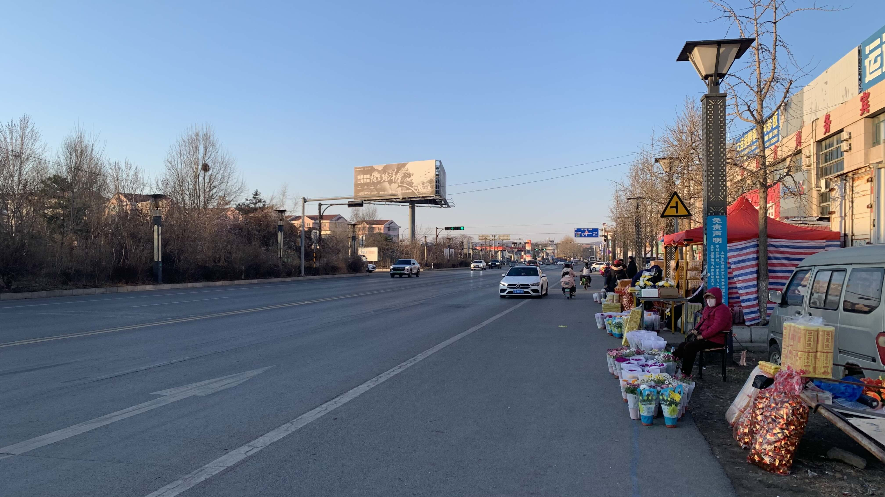
路邊陸續出現賣花的攤販，一開始還以為這裡的人愛花，看到旁邊成堆的金紙才想到已經是清明了。
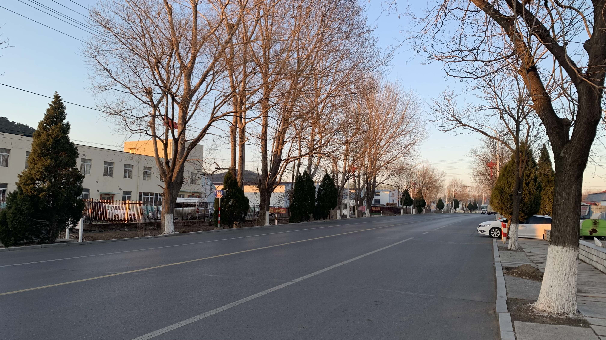
約莫夕陽西下時分，很隨便地拍了張照片，繼續趕路。
說實話在這裡騎車的經驗非常差，一路上瘋狂被按喇叭，大卡車可以對所有車子按喇叭，轎車則針對三輪車和電瓶車，而我做為道路食物鏈的最底層，耳膜當然受到極大的物理攻擊。此外經過的街道滿路都是垃圾，卡車揚起的沙塵和三輪車的廢棄不斷往我臉上噴。絲毫沒有任何一點享受或者喜悅的心。
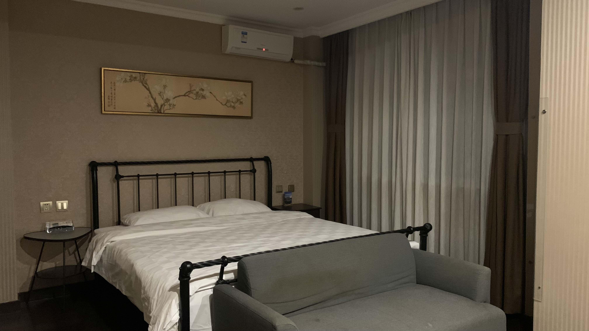
晚上七點抵達住處，相當高級。還沒有學會使用支付寶和高德地圖，過幾天也許能找到更便宜的住處。
門這個字很有意思，他原本有個寫法寫作「閒」，也就是兩扇門板中間透出月光的畫面。我很喜歡這個字，因爲它在空間上和時間上都具有特殊的含義。
一般來說我們只會以為他是兩扇門板的象形，是用來阻擋隔絕同時兼作通道使用的物件，但其實它是以兩扇可見的門板表象中間那個無形穿過縫隙的光。而要看見那道光，需要有一個人具備閒暇的時間在門後看見它。
因此，無論在人的時間或物的空間意義上，門這個字所表象的都是相對於「有」的「無」的狀態。當然它還屬於「相對的無」，是底層的無透過人為的，對有的安排顯現的。
之所以想起這個字，主要是因為從威海搭船開始，直到今日，我看見很多人坐在馬桶上大便的樣子。於是我思考，日本的廁所、韓國的廁所，和有門卻不關門的廁所之間，呈現了怎樣的文化對比。
今日花費： 迪卡儂補給 553、吉野家 28、零食 25、住宿 510（台幣）